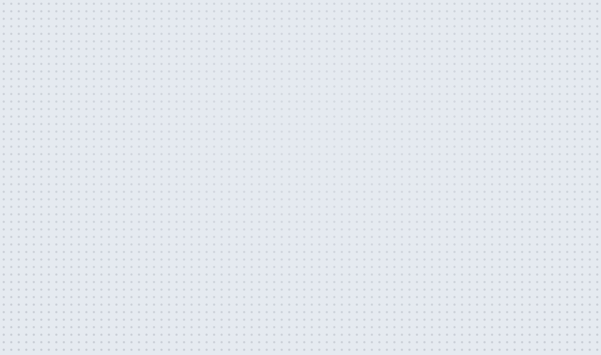
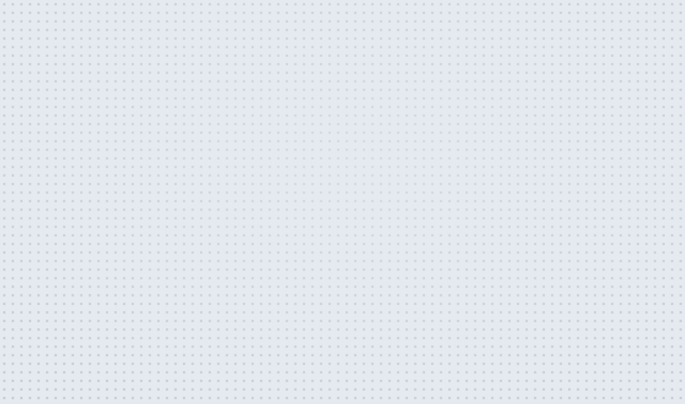
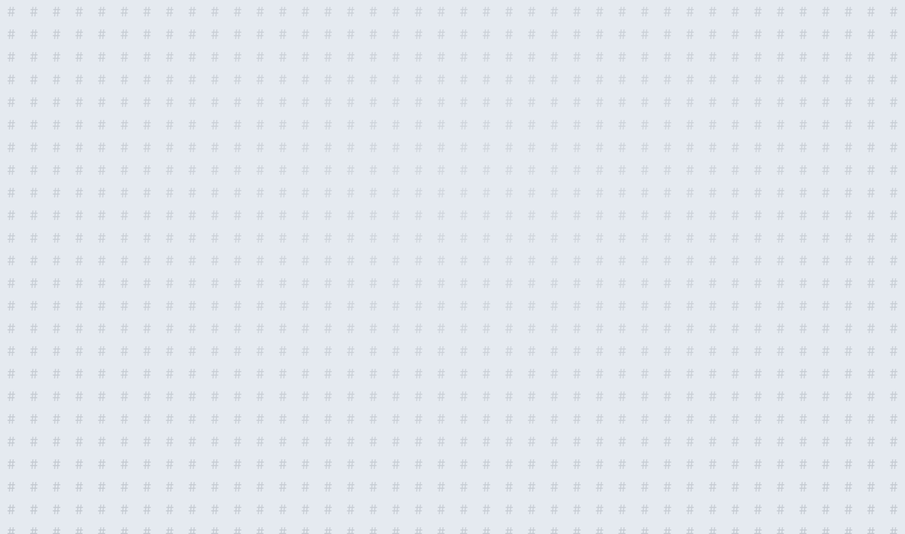
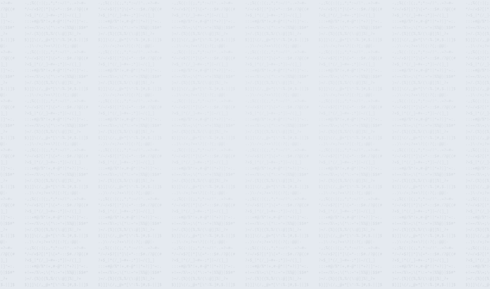

圆点10px / 1.5px DOT
点阵四种底纹 + 流光。每一格都是真实渲染的一层 fixed 背景，不含 shell；为了看清形状， 多数点阵格保持 1×、浓淡调到 300–500%；字符格放到 2× 才看得清字形。




点阵是 body::before 的一层 fixed 伪元素，只动 transform / opacity；
流光是 1/5 视口的 WebGL2 画布（src/flow.js），切走就拆。
preview/index.html 里调；这里只把浓淡拉高压暗，方便看形状。
theme=averita · motion=off